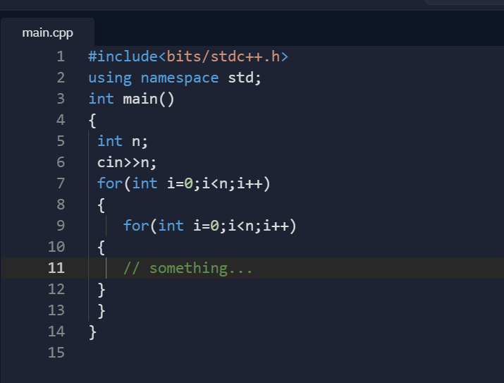
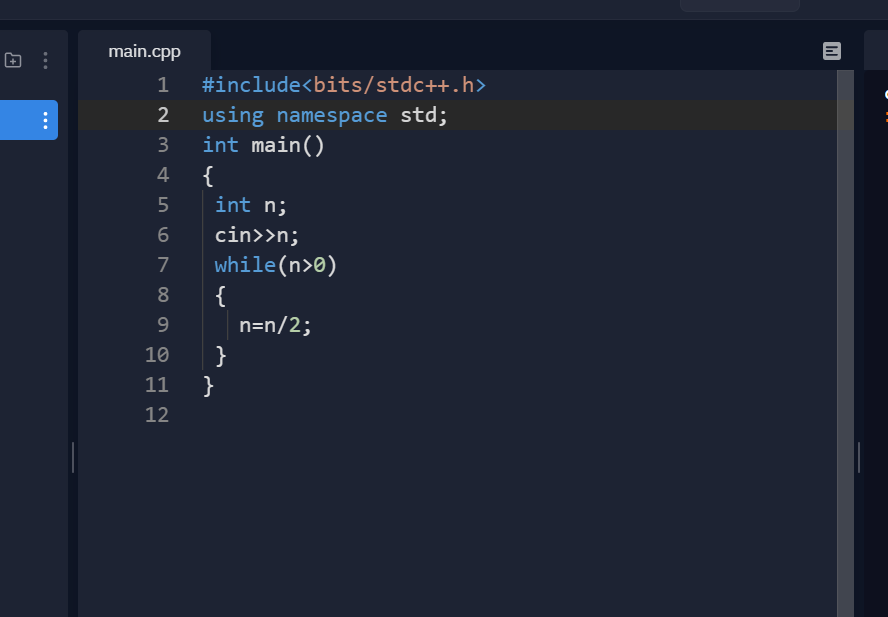

Time Complexity
Published on July 28,2021
Hello, everyone in this blog I will be talking about time complexity which is the important thing that you must know if you are planning to do competitive programming and not only for CP but also if you are preparing for interviews.
Why you should know how to find the time complexity of any code? :
see, in the world of competitive programming every second is important, suppose you have written the right logic of a code but it is taking more time to run, you must be knowing that how to reduce the time complexity of your code.
Now let's understand Time complexity :
Before talking about how to find the time complexity of a code, let me clear you that we can not find the exact execution time of a code we can only estimate the rough figure. So, we have to estimate a rough figure, how much time our code is taking to run.
Iteration :
Any statement written in code is called one iteration.
Let's understand this by an example :
So, the total number of iteration in the above example is 3.
Note 1: for finding the time complexity of a code we have to estimate the total number of iterations that our code is having.
Note 2: All the smaller iteration like 1,2,3,..etc these are called constant-time operations.
In our above example, int y is a constant operation means it is taking one unit of time to execute, so if we calculate the total iteration of the above code that is 3 so we can say the time complexity of the above code is O(3), where O -> big O and 3-> no. of iterations.
Now let's take another example :
In this example, if we observe for loop is executing cout<<"Shubham" for n times so we have n iteration, right?So, the total iteration in the code will be O(5) + O(n), right?
what if we had three statement in for loop :
for example :
So, now for every n we have 3 iterations, the total iteration for the loop will be O(3n) and the
total time complexity of the code will be O(5)+O(3n).
Note: whenever we are estimating time complexity we try to ignore the constant
terms(only if it is not disturbing the order, suppose if the maximum value of n is given 10^5 then
we can ignore 3 from 3*10^5 and we can also ignore adding 5 to 10^5 because this will not disturb
the order).
So, now we can write the overall time complexity of the above code is O(n).
few points to notice :
1. O(N) + O(N) =~ O(N) , if O(N) is not adding significantly.
2. O(K*N)=~ O(N), if K is very less than N.
3. All constant time operations can be written as O(1), like O(3), O(4), etc.
Now let's understand how many iterations run in 1sec (it can vary in your systems, I am talking about
with respect to other online platforms)
Number of iterations in 1sec - 10^7 to 10^8(this should be your rough estimation while codding in
any online platform).
10^7 iterations will take 1sec
10^8 iterations will take 10sec
10^9 iterations will take 1000sec
So, until now we have learned enough so that we can begin with other examples to finally understand how to find time complexity:
in the below example N < 100000 and a[i] < 100000
if we try to calculate time complexity for this code, as you know for calculating time complexity we count the total number of iterations in the code, total iterations are O(1)+ O(1) +O(n2) we can ignore the constant time operations.
Do you think this code will run in 1sec? no this will not run in 1sec because as I have mentioned above, N<100000 and a[i] < 100000 and calculated time complexity is O(N2), N*N> 10^7.
Now, lets see the last example :
So again for finding time complexity we will calculate the total possible iterations in the code :
always remember while calculating time complexity think about the worst-case and for the above code N < 10^5.
and if we observe each time n is having half of it so we have to find in how many iterations the worst-case( 10^5) will become 0, because that will the total number of iteration.
for example, suppose N=10 then it will take three steps to become zero according to our code, right? so, actually, we have to find how many times we can divide a number by 2, which will be the total number of iteration of our code right?
Now let's see some basic maths, if 2 is taking a number of steps to divide the N then we can write it as :
2a =N
and a can be written as a=logN
a is the thing which we had to calculate to find the time complexity of our code, if you don't understand then read it again:
so the final time complexity of our code will be O(logN)
Will it run in 1 sec? yes it will run, put the worst value of N inside the log and see what happens.